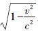

狭义相对论在多大的程度上得到经验的支持呢?这个问题是不容易回答的，不容易回答的理由已经在叙述斐索的重要实验时讲过了。狭义相对论是从麦克斯韦和洛伦兹关于电磁现象的理论中衍化出来的。因此，所有支持电磁理论的经验事实也都支持相对论。在这里我要提一下具有特别重要意义的一个事实，即相对论使我们能够预示地球对恒星的相对运动对于从恒星传到我们这里的光所产生的效应。这些结果是以极简单的方式获得的，而所预示的效应已判明是与经验相符合的。我们所指的是地球绕日运动所引起的恒星视位置的周年运动(光行差)，以及恒星对地球的相对运动的径向分量对于从这些恒星传到我们这里的光的颜色的影响。后一个效应表现为，从恒星传播到我们这里的光的光谱线的位置与在地球上的光源所产生的相同的光谱线的位置相比确有微小的移动(多普勒原理)。支持麦克斯韦-洛伦兹理论同时也是支持相对论的实验论据多得不胜枚举。实际上这些论据对理论的可能性的限制已达到了只有麦克斯韦和洛伦兹的理论才能经得起经验的检验的程度。
但是有两类已获得的实验事实直到现在为止只有在引进一个辅助假设后才能用麦克斯韦-洛伦兹的理论来表示，而这个辅助假设就其本身而论(亦即如果不引用相对论的话)似乎是不能与麦克斯韦-洛伦兹理论联系在一起的。
大家知道，阴极射线和放射性物质发射出来的所谓β射线是由惯性很小速度相当大的带负电的粒子(电子)构成的。考察一下此类射线在电场和磁场影响下的偏斜，我们就能够很精确地研究这些粒子的运动定律。
在对这些电子进行理论描述时，我们遇到了困难，即电动力学理论本身不能解释电子的本性。因为由于同号的电质量相互排斥，构成电子的负的电质量在其本身相互排斥的影响下就必然会离散，否则一定存在着另外一种力作用于它们之间，但这种力的本性到目前为止我们还未清楚 [1] 。如果我们假定构成电子的电质量相互之间的相对距离在电子运动的过程中保持不变(即经典力学中所说的刚性连接)，那么我们就会得出一个与经验不相符合的电子运动定律。洛伦兹是根据纯粹的形式观点引进下述假设的第一人，他假设电子的外形由于电子运动的缘故而在运动的方向发生收缩，收缩的长度与

成正比，这个没有被任何电动力学事实所证明的假设却给了我们一个在近年来以相当高的精确度得到证实的特别的运动定律。相对论也导致了同样的运动定律，而无需借助于关于电子的结构和行为的任何特别假设。我们在第13节叙述斐索的实验时也得出了相似的结论，相对论预言了这个实验的结果，而无需引用关于液体的物理本性的假设。
我们所指的第二类事实涉及这样的问题，即地球在空间中的运动能否用在地球上所做的实验来观察。我们已在第5节谈过，所有这类企图都导致了否定的结果。在相对论提出以前，人们很难接受这个否定的结果，我们现在来讨论一下难以接受的原因。对于时间和空间的传统偏见不容许对伽利略变换在从一个参考物体变换到另一个参考物体中所占有的首要地位产生任何怀疑。设麦克斯韦-洛伦兹方程对于一个参考物体K 是成立的，那么如果假定坐标系K 和相对于K 作匀速运动的坐标系K′ 之间存在着伽利略变换关系，我们就会发现这些方程对于K′ 不能成立。由此看来，在所有的伽利略坐标系中，必然有一个对应于一种特别运动状态的坐标系(K )具有物理的唯一性。过去对这个结果的物理解释是，K 相对于假设的空间中的以太是静止的。另一方面，所有相对于K 运动着的坐标系K′ 就被认为都是在相对于以太运动着。因此，曾假定为对于K′ 能够成立的运动定律所以比较复杂是由于K′ 相对于以太运动(相对于K′ 的“以太漂移”)之故。严格地说，应该假定这样的以太漂移相对于地球也是存在的。因此，长期以来，物理学家们对于企图探测地球表面上是否存在着以太漂移的工作曾付出很大努力。
这些企图中最值得注意的一种是迈克耳孙所设计的方法，看来这方法好像必然会具有决定性的意义。设想在一个刚体上安放两面镜子，使这两面镜子的反光面相互面对。如果整个系统相对于以太保持静止，那么光线从一面镜子射到另一面镜子然后再返回就需要一个完全确定的时间T 。但根据计算推出，如果该刚体连同镜子相对于以太是在运动着的话，则上述过程就需要一个略微不同的时间T′ 。还有一点： 计算表明，若相对于以太运动的速度规定为同一速度v ，则物体垂直于镜子平面运动时的T′ 又将与运动平行于镜子平面时的T′ 不相同。虽然计算出来的这两个时间的差别极其微小，不过在迈克耳孙和莫雷所作的利用光的干涉的实验中，这两个时间的差别应该还是能够清楚地观察得到的。但是他们的实验却得出了完全否定的结果。这是一件使物理学家感到极难理解的事情。洛伦兹和斐兹杰惹曾经从这种困难的局面中把理论解救出来，他们的解法是假定物体相对于以太的运动能使物体沿运动的方向发生收缩，而其收缩量恰好足以补偿上面提到的时间上的差别。若与第12节的论述相比较，可以指出： 从相对论的观点来看，这种解决困难的方法也是对的。但是若以相对论为基础，则其解释的方法远远要更为令人满意。按照相对论，并没有“特别优越的”(唯一的)坐标系这样的东西可以用来作为引进以太观念的理由，因此不可能有什么以太漂移，也不可能有用以演示以太漂移的任何实验。在这里运动物体的收缩是完全从相对论的两个基本原理推出来的，并不需要引进任何特定假设；至于造成这种收缩的首要因素，我们发现，并不是运动本身(对于运动本身我们不能赋予任何意义)，而是对于参考物体的相对运动——这一参考物体是在具体实例中适当选定的。例如，对于一个与地球一起运动的坐标系而言，麦克耳孙和莫雷的镜子系统并没有缩短，但是对于一个相对于太阳保持静止的坐标系而言，这个镜子系统确是缩短了。
[1] 按照广义相对论，很可能电子的电质量是由于引力的作用而集结在一起的。